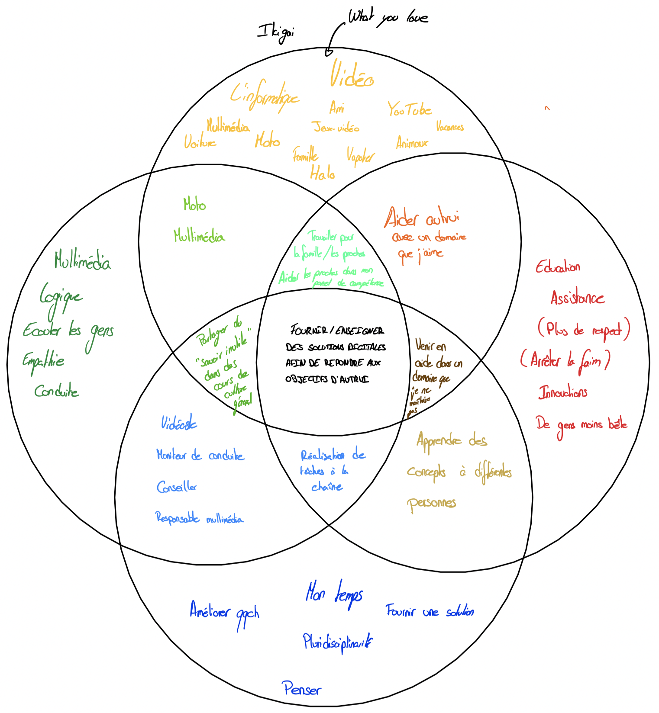

A Propos
Une page à propos… comme d’habitude sur les sites, mais cette fois-ci, c’est la mienne.
Ce projet est un projet pour le cours de “Veille Technologique” de la HEIG-VD.
Qui suis-je ?
Je m’appelle Patrick Marques Meliciano, je suis diplômé d’un CFC de médiamaticien depuis 2018, je suis actuellement en dernière année en ingénierie des média à la HEIG-VD.
Passionné par le multimédia depuis mon plus jeune âge, je suis déterminé à jouer un rôle clé au sein d’une entreprise, contribuant ainsi à son développement en relevant avec succès ses défis.
En plus de mes études, je travaille les dimanches et jours fériés comme animateur chez “Paintball Area” à Oulens-sous-Echallens depuis 2017 et comme concierge chez “Domicim” depuis 2022.
Depuis 2015, je collabore également avec un associé au sein de “Wolfscomputers Emery”, une entreprise individuelle spécialisée en informatique et communication, où je mets en œuvre mes compétences en multimédia.
Mes travaux
Si vous avez envie de voir mes travaux, je vous invite à aller sur mon portfolio. Je pense y mettre également les PDF de mes travaux plutôt que simplement dire que je les ai fait, mais pour le moment, je n’ai pas encore eu le temps de le faire, et je n’ai pas l’hébergement nécessaire pour le faire. Je verrais pour peut-être faire le site sur Github Pages et ensuite rediriger le nom de domaine vers celui-ci.
Mon Ikigai
Avant ce cours, je n’avais jamais entendu le terme d’Ikigai.
C’est un terme japonais qui signifie “raison d’être”. C’est un concept qui permet de trouver sa place dans la société et de trouver un sens à sa vie.
Il est composé de 4 parties:
- Ce que j’aime
- Ce dans quoi je suis doué
- Ce dont le monde a besoin
- Ce pour quoi je peux être payé
Il m’a été très difficile de faire cet Ikigai, notamment avec la partie “Ce dont le monde à besoin”, parce que je prenais cette case de manière trop générale, et je me disais que le monde n’avait pas besoin de moi, mais en fait, il faut prendre cette case de manière plus personnelle, et donc, ce dont j’ai besoin ou le monde qui m’est proche tant en terme de relationnel ou en terme géographique (ma ville, mon pays, etc…) aurait besoin.

Mon Ikigai, donc ce qui est au milieu de tout, c’est “Fournir / ensigner des solutions digitale afin de répondre aux objectifs d’autrui”. Qui se transmettrait par le multimédia, c’est ce que j’aime, c’est ce dans quoi je suis doué, c’est ce dont j’ai besoin et c’est ce pour quoi je peux être payé.
Ce qui fait que dans le cadre de la veille, je me concentre surtout sur le multimédia, donc que cela soit des nouveautés web, mais aussi des nouveautés en terme de graphisme, de vidéo, de son, etc…